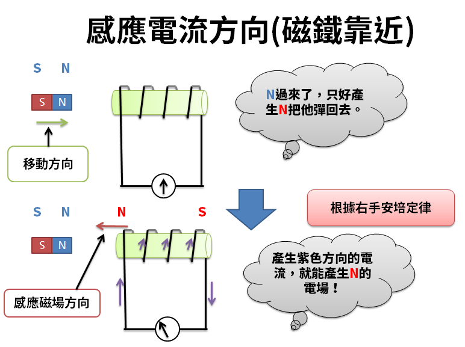

牛頓運動定律在物理學等學科領域上，應用廣泛：

牛頓運動定律可求解動力學問題。
-物體的受力情況已知求解運動狀態，或是運動狀態已知求解受力情況，均是對這些條件依次轉化:
-兩類問題的求解思路相同，基本分為以下三步：
確定研究對象，進行受力分析或運動狀態變化情況分析。
建立合適座標系，列牛頓運動定律方程，適當補列其它方程。
解方程並討論。
流體力學
-牛頓運動定律較功能原理，推導理想流體的氣體沿水平方向運動或不計單位體積質量氣體的勢能時遵循的伯努利方程  ，更直觀易懂。
，更直觀易懂。
-對於密度為  的小體元，設其受到的體積力密度為
的小體元，設其受到的體積力密度為  ，壓強梯度力為
，壓強梯度力為  ，則牛頓第二運動定律在流體力學中有特殊表達形式 ：
，則牛頓第二運動定律在流體力學中有特殊表達形式 ：  。
。
-基於通過對應力與應變線性定律進行修正而得到的唯象模型得到的非牛頓流體的本構方程。
-可基於牛頓運動定律建立動能質氣擴散輸運的動量平衡方程得到，即適用於非牛頓流動的普適動量輸運定律。
-該方式還可闡明一些非牛頓流動現象的本質是來自能質運動過程中的慣性。

電磁感應
-在電磁感應中電容負載平行導軌模型中，接不同負載其上的導體棒將有不同的運動形式。
-接容抗時對電容器充電，其中導體棒只要有電流，則始終受安培力。
-可以針對具體物理過程靈活運用牛頓運動定律及同一直線矢量合成方法確定杆的運動狀態。
牛頓運動定律在日常生活和生產實踐上，亦有眾多應用和幫助：

機械製造領域
-牛頓運動定律能幫助研發安全且高效的機械結構或產品。
-根據牛頓第二運動定律推得的法向壓強梯度表達式  ，能更好地解釋機翼舉力。
，能更好地解釋機翼舉力。
-根據牛頓第三運動定律導出的在運動時  ，可設計出“空吸作用”原理設計的尾噴管。
，可設計出“空吸作用”原理設計的尾噴管。
-上述兩種研究成果可廣泛用於指導飛機、火箭和車輛等運動機械的製造設計，對於提高它們的推進效率都會大有幫助。

信息社會學領域
-借鑑牛頓運動定律的思想方法，可完成信息社會學有關概念的衍生與定理的變通。
-獲得的新規律可指導圖書情報工作的現狀與趨勢。
心理健康教育領域
-牛頓的三條運動定律可分別對應三個教育環節:
-在牛頓力學中，三定律既相互獨立，又有體系內的一致性、完整性和相容性。
-在教育學中，這三個環節相輔相成、和諧統一。
-這對引導高校理工科學生重塑、優化和調整心理品質、狀態，有?積極的?示作用。
金融領域
-牛頓運動定律也可用來解釋和預測金融發展動向。
-如在股票市場投資中，就有三條與牛頓運動定律一一對應的定律：
除有外因，股價維持原有變化趨勢。
股價增速依市場，成比例地正向變化。
每位買家都是賣主，該預測與數據比較基本準確。

動畫製作領域
-由於牛頓運動定律表明力的作用是造成一切運動的根本原因，而動畫是讓畫面運動的影視藝術。
-故牛頓運動定律在動畫藝術中佔有重要的位置，是動畫中必不可少的研究對象。
-如在銀幕上表現出物體的重量感，完全取決於其受力運動時動畫的間隔距離，而不在動畫稿本身的美觀和逼真程度。
-這需要合理藉助牛頓運動定律，能增強動畫真實感。